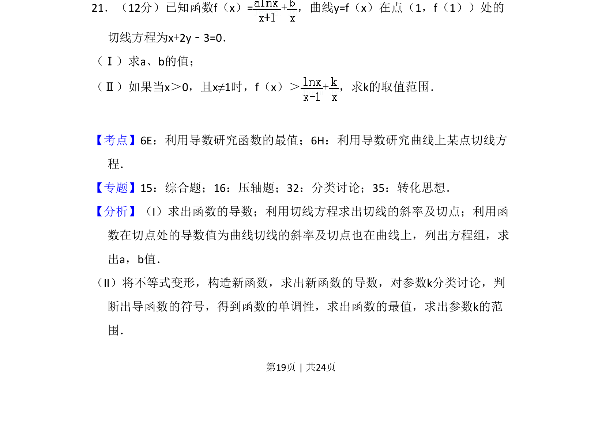
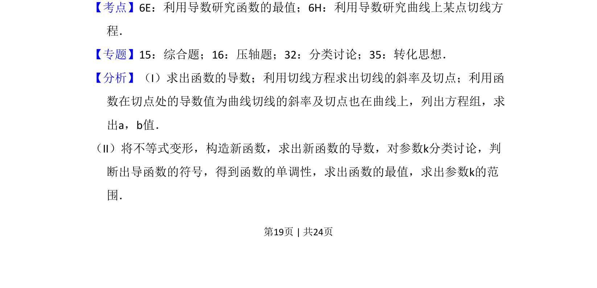
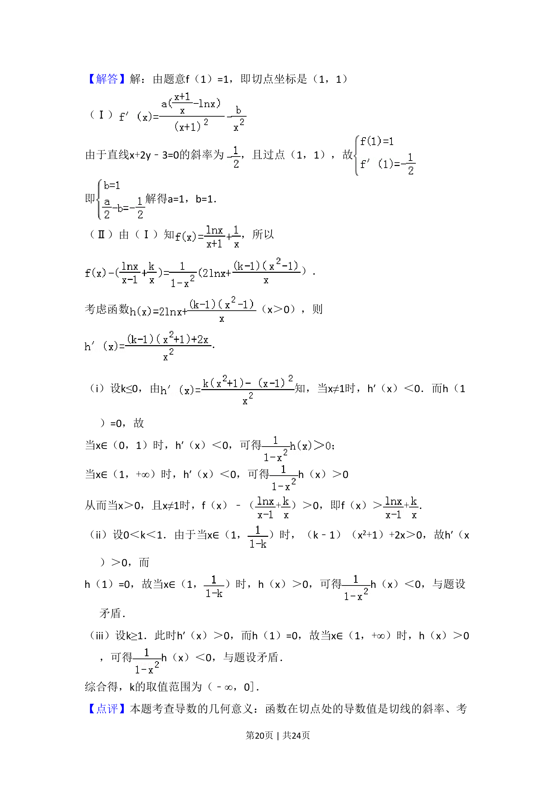
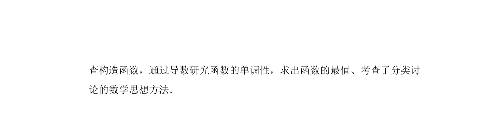

考点：导数几何意义 利用导数研究函数的最值 分类讨论

本题考查利用导数求切线参数及含参不等式恒成立问题。



📄 原 PDF 第 19 页：
素材/真题/吉林/2008-2024·（吉林）数学高考真题/2011年高考数学试卷（理）（新课标）（解析卷）.pdf
21．（12分）已知函数f（x）=+，曲线y=f（x）在点（1，f（1））处的 切线方程为x+2y﹣3=0． （Ⅰ）求a、b的值； （Ⅱ）如果当x＞0，且x≠1时，f（x）＞+，求k的取值范围．
【考点】6E：利用导数研究函数的最值；6H：利用导数研究曲线上某点切线方 程．菁优网版权所有 【专题】15：综合题；16：压轴题；32：分类讨论；35：转化思想． 【分析】（I）求出函数的导数；利用切线方程求出切线的斜率及切点；利用函 数在切点处的导数值为曲线切线的斜率及切点也在曲线上，列出方程组，求 出a，b值． （II）将不等式变形，构造新函数，求出新函数的导数，对参数k分类讨论，判 断出导函数的符号，得到函数的单调性，求出函数的最值，求出参数k的范 围．